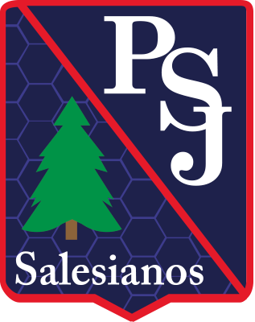

PSJ Radio
La frecuencia de la comunidad de estudiantes del Colegio Patrocinio de San José.

Sobre Nuestra Radio
Radio PSJ, la emisora oficial del Patrocinio de San José, una propuesta hecha por estudiantes para el Colegio. Te acompañamos con toda la información clave de nuestra comunidad educativa, anuncios del día a día y una selección musical diversa para todos los gustos.
Programas
Conoce nuestra parrilla de programación y horarios
Últimas Noticias
Mantente informado